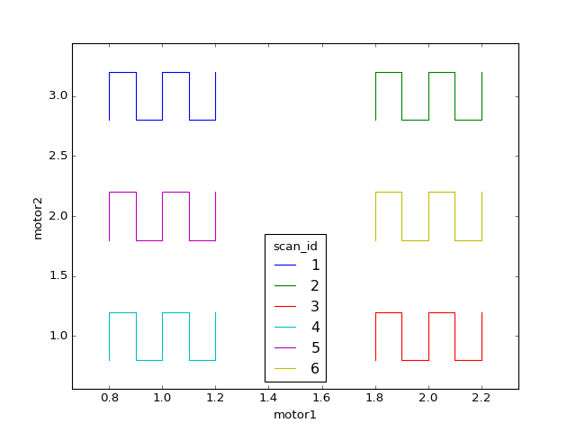

Scan a grid around each sample in a grid¶
from collections import ChainMap
from bluesky.plans import (abs_set, relative_outer_product_scan, wait,
run_decorator, stage_decorator, subs_decorator)
from bluesky.callbacks import LiveTable, LivePlot
from bluesky.examples import det4, motor1, motor2
def grid_in_grid(samples):
"""
Scan a grid around the neighborhood of each sample.
Parameters
----------
sample : dict
mapping each sample's name to its (x, y) position
"""
# In this example we hard-code the hardware and other parameters. For more
# flexibility, they could instead be parameters to the function.
detector = det4
x = motor1
y = motor2
x_range = y_range = 0.2
x_num = y_num = 5
@subs_decorator([LiveTable([detector, x, y]),
LivePlot('motor2', 'motor1')])
def plan():
for name, position in samples.items():
# Prepare metadata.
md = {'sample': name}
# Move to the cetner of the sample position.
x_pos, y_pos = position
yield from abs_set(x, x_pos)
yield from abs_set(y, y_pos)
yield from wait()
# Scan a grid around that position.
yield from relative_outer_product_scan([detector],
x, -x_range, x_range, x_num,
y, -y_range, y_range, y_num,
True, md=md)
yield from plan()
# Example usage:
samples = {'A': (1, 1),
'B': (1, 2),
'C': (1, 3),
'D': (2, 1),
'E': (2, 2),
'F': (2, 3)}
RE(grid_in_grid(samples))
Demo output:

In [1]: RE(grid_in_grid(samples))
+-----------+------------+------------+------------+-----------------+------------+-----------------+
| seq_num | time | det4 | motor1 | motor1_setpoint | motor2 | motor2_setpoint |
+-----------+------------+------------+------------+-----------------+------------+-----------------+
| 1 | 20:48:00.0 | 0.01 | 0.80 | 0.80 | 2.80 | 2.80 |
| 2 | 20:48:00.0 | 0.01 | 0.80 | 0.80 | 2.90 | 2.90 |
| 3 | 20:48:00.1 | 0.01 | 0.80 | 0.80 | 3.00 | 3.00 |
| 4 | 20:48:00.1 | 0.01 | 0.80 | 0.80 | 3.10 | 3.10 |
| 5 | 20:48:00.1 | 0.00 | 0.80 | 0.80 | 3.20 | 3.20 |
| 6 | 20:48:00.2 | 0.00 | 0.90 | 0.90 | 3.20 | 3.20 |
| 7 | 20:48:00.2 | 0.01 | 0.90 | 0.90 | 3.10 | 3.10 |
| 8 | 20:48:00.2 | 0.01 | 0.90 | 0.90 | 3.00 | 3.00 |
| 9 | 20:48:00.2 | 0.01 | 0.90 | 0.90 | 2.90 | 2.90 |
| 10 | 20:48:00.3 | 0.01 | 0.90 | 0.90 | 2.80 | 2.80 |
| 11 | 20:48:00.3 | 0.01 | 1.00 | 1.00 | 2.80 | 2.80 |
| 12 | 20:48:00.3 | 0.01 | 1.00 | 1.00 | 2.90 | 2.90 |
| 13 | 20:48:00.4 | 0.01 | 1.00 | 1.00 | 3.00 | 3.00 |
| 14 | 20:48:00.4 | 0.00 | 1.00 | 1.00 | 3.10 | 3.10 |
| 15 | 20:48:00.4 | 0.00 | 1.00 | 1.00 | 3.20 | 3.20 |
| 16 | 20:48:00.5 | 0.00 | 1.10 | 1.10 | 3.20 | 3.20 |
| 17 | 20:48:00.5 | 0.00 | 1.10 | 1.10 | 3.10 | 3.10 |
| 18 | 20:48:00.5 | 0.01 | 1.10 | 1.10 | 3.00 | 3.00 |
| 19 | 20:48:00.6 | 0.01 | 1.10 | 1.10 | 2.90 | 2.90 |
| 20 | 20:48:00.6 | 0.01 | 1.10 | 1.10 | 2.80 | 2.80 |
| 21 | 20:48:00.6 | 0.01 | 1.20 | 1.20 | 2.80 | 2.80 |
| 22 | 20:48:00.6 | 0.01 | 1.20 | 1.20 | 2.90 | 2.90 |
| 23 | 20:48:00.7 | 0.01 | 1.20 | 1.20 | 3.00 | 3.00 |
| 24 | 20:48:00.7 | 0.00 | 1.20 | 1.20 | 3.10 | 3.10 |
| 25 | 20:48:00.7 | 0.00 | 1.20 | 1.20 | 3.20 | 3.20 |
+-----------+------------+------------+------------+-----------------+------------+-----------------+
generator relative_outer_product_scan ['8397b6'] (scan num: 7)
+-----------+------------+------------+------------+-----------------+------------+-----------------+
| seq_num | time | det4 | motor1 | motor1_setpoint | motor2 | motor2_setpoint |
+-----------+------------+------------+------------+-----------------+------------+-----------------+
| 1 | 20:48:00.9 | 0.00 | 1.80 | 1.80 | 2.80 | 2.80 |
| 2 | 20:48:00.9 | 0.00 | 1.80 | 1.80 | 2.90 | 2.90 |
| 3 | 20:48:01.0 | 0.00 | 1.80 | 1.80 | 3.00 | 3.00 |
| 4 | 20:48:01.0 | 0.00 | 1.80 | 1.80 | 3.10 | 3.10 |
| 5 | 20:48:01.0 | 0.00 | 1.80 | 1.80 | 3.20 | 3.20 |
| 6 | 20:48:01.1 | 0.00 | 1.90 | 1.90 | 3.20 | 3.20 |
| 7 | 20:48:01.1 | 0.00 | 1.90 | 1.90 | 3.10 | 3.10 |
| 8 | 20:48:01.1 | 0.00 | 1.90 | 1.90 | 3.00 | 3.00 |
| 9 | 20:48:01.2 | 0.00 | 1.90 | 1.90 | 2.90 | 2.90 |
| 10 | 20:48:01.2 | 0.00 | 1.90 | 1.90 | 2.80 | 2.80 |
| 11 | 20:48:01.2 | 0.00 | 2.00 | 2.00 | 2.80 | 2.80 |
| 12 | 20:48:01.3 | 0.00 | 2.00 | 2.00 | 2.90 | 2.90 |
| 13 | 20:48:01.3 | 0.00 | 2.00 | 2.00 | 3.00 | 3.00 |
| 14 | 20:48:01.3 | 0.00 | 2.00 | 2.00 | 3.10 | 3.10 |
| 15 | 20:48:01.4 | 0.00 | 2.00 | 2.00 | 3.20 | 3.20 |
| 16 | 20:48:01.4 | 0.00 | 2.10 | 2.10 | 3.20 | 3.20 |
| 17 | 20:48:01.5 | 0.00 | 2.10 | 2.10 | 3.10 | 3.10 |
| 18 | 20:48:01.6 | 0.00 | 2.10 | 2.10 | 3.00 | 3.00 |
| 19 | 20:48:01.6 | 0.00 | 2.10 | 2.10 | 2.90 | 2.90 |
| 20 | 20:48:01.7 | 0.00 | 2.10 | 2.10 | 2.80 | 2.80 |
| 21 | 20:48:01.7 | 0.00 | 2.20 | 2.20 | 2.80 | 2.80 |
| 22 | 20:48:01.7 | 0.00 | 2.20 | 2.20 | 2.90 | 2.90 |
| 23 | 20:48:01.8 | 0.00 | 2.20 | 2.20 | 3.00 | 3.00 |
| 24 | 20:48:01.8 | 0.00 | 2.20 | 2.20 | 3.10 | 3.10 |
| 25 | 20:48:01.8 | 0.00 | 2.20 | 2.20 | 3.20 | 3.20 |
+-----------+------------+------------+------------+-----------------+------------+-----------------+
generator relative_outer_product_scan ['7c1727'] (scan num: 8)
+-----------+------------+------------+------------+-----------------+------------+-----------------+
| seq_num | time | det4 | motor1 | motor1_setpoint | motor2 | motor2_setpoint |
+-----------+------------+------------+------------+-----------------+------------+-----------------+
| 1 | 20:48:02.0 | 0.14 | 1.80 | 1.80 | 0.80 | 0.80 |
| 2 | 20:48:02.0 | 0.13 | 1.80 | 1.80 | 0.90 | 0.90 |
| 3 | 20:48:02.1 | 0.12 | 1.80 | 1.80 | 1.00 | 1.00 |
| 4 | 20:48:02.1 | 0.11 | 1.80 | 1.80 | 1.10 | 1.10 |
| 5 | 20:48:02.1 | 0.10 | 1.80 | 1.80 | 1.20 | 1.20 |
| 6 | 20:48:02.2 | 0.08 | 1.90 | 1.90 | 1.20 | 1.20 |
| 7 | 20:48:02.2 | 0.09 | 1.90 | 1.90 | 1.10 | 1.10 |
| 8 | 20:48:02.3 | 0.10 | 1.90 | 1.90 | 1.00 | 1.00 |
| 9 | 20:48:02.3 | 0.11 | 1.90 | 1.90 | 0.90 | 0.90 |
| 10 | 20:48:02.3 | 0.12 | 1.90 | 1.90 | 0.80 | 0.80 |
| 11 | 20:48:02.4 | 0.10 | 2.00 | 2.00 | 0.80 | 0.80 |
| 12 | 20:48:02.4 | 0.09 | 2.00 | 2.00 | 0.90 | 0.90 |
| 13 | 20:48:02.4 | 0.08 | 2.00 | 2.00 | 1.00 | 1.00 |
| 14 | 20:48:02.5 | 0.07 | 2.00 | 2.00 | 1.10 | 1.10 |
| 15 | 20:48:02.5 | 0.07 | 2.00 | 2.00 | 1.20 | 1.20 |
| 16 | 20:48:02.6 | 0.05 | 2.10 | 2.10 | 1.20 | 1.20 |
| 17 | 20:48:02.6 | 0.06 | 2.10 | 2.10 | 1.10 | 1.10 |
| 18 | 20:48:02.6 | 0.07 | 2.10 | 2.10 | 1.00 | 1.00 |
| 19 | 20:48:02.7 | 0.07 | 2.10 | 2.10 | 0.90 | 0.90 |
| 20 | 20:48:02.7 | 0.08 | 2.10 | 2.10 | 0.80 | 0.80 |
| 21 | 20:48:02.7 | 0.06 | 2.20 | 2.20 | 0.80 | 0.80 |
| 22 | 20:48:02.8 | 0.06 | 2.20 | 2.20 | 0.90 | 0.90 |
| 23 | 20:48:02.8 | 0.05 | 2.20 | 2.20 | 1.00 | 1.00 |
| 24 | 20:48:02.8 | 0.05 | 2.20 | 2.20 | 1.10 | 1.10 |
| 25 | 20:48:02.9 | 0.04 | 2.20 | 2.20 | 1.20 | 1.20 |
+-----------+------------+------------+------------+-----------------+------------+-----------------+
generator relative_outer_product_scan ['abac8c'] (scan num: 9)
+-----------+------------+------------+------------+-----------------+------------+-----------------+
| seq_num | time | det4 | motor1 | motor1_setpoint | motor2 | motor2_setpoint |
+-----------+------------+------------+------------+-----------------+------------+-----------------+
| 1 | 20:48:03.0 | 0.53 | 0.80 | 0.80 | 0.80 | 0.80 |
| 2 | 20:48:03.1 | 0.48 | 0.80 | 0.80 | 0.90 | 0.90 |
| 3 | 20:48:03.1 | 0.44 | 0.80 | 0.80 | 1.00 | 1.00 |
| 4 | 20:48:03.2 | 0.40 | 0.80 | 0.80 | 1.10 | 1.10 |
| 5 | 20:48:03.2 | 0.35 | 0.80 | 0.80 | 1.20 | 1.20 |
| 6 | 20:48:03.3 | 0.32 | 0.90 | 0.90 | 1.20 | 1.20 |
| 7 | 20:48:03.3 | 0.36 | 0.90 | 0.90 | 1.10 | 1.10 |
| 8 | 20:48:03.4 | 0.40 | 0.90 | 0.90 | 1.00 | 1.00 |
| 9 | 20:48:03.4 | 0.44 | 0.90 | 0.90 | 0.90 | 0.90 |
| 10 | 20:48:03.4 | 0.48 | 0.90 | 0.90 | 0.80 | 0.80 |
| 11 | 20:48:03.5 | 0.44 | 1.00 | 1.00 | 0.80 | 0.80 |
| 12 | 20:48:03.5 | 0.40 | 1.00 | 1.00 | 0.90 | 0.90 |
| 13 | 20:48:03.6 | 0.37 | 1.00 | 1.00 | 1.00 | 1.00 |
| 14 | 20:48:03.6 | 0.33 | 1.00 | 1.00 | 1.10 | 1.10 |
| 15 | 20:48:03.7 | 0.30 | 1.00 | 1.00 | 1.20 | 1.20 |
| 16 | 20:48:03.7 | 0.27 | 1.10 | 1.10 | 1.20 | 1.20 |
| 17 | 20:48:03.7 | 0.30 | 1.10 | 1.10 | 1.10 | 1.10 |
| 18 | 20:48:03.8 | 0.33 | 1.10 | 1.10 | 1.00 | 1.00 |
| 19 | 20:48:03.9 | 0.36 | 1.10 | 1.10 | 0.90 | 0.90 |
| 20 | 20:48:03.9 | 0.40 | 1.10 | 1.10 | 0.80 | 0.80 |
| 21 | 20:48:04.0 | 0.35 | 1.20 | 1.20 | 0.80 | 0.80 |
| 22 | 20:48:04.0 | 0.32 | 1.20 | 1.20 | 0.90 | 0.90 |
| 23 | 20:48:04.0 | 0.30 | 1.20 | 1.20 | 1.00 | 1.00 |
| 24 | 20:48:04.1 | 0.27 | 1.20 | 1.20 | 1.10 | 1.10 |
| 25 | 20:48:04.1 | 0.24 | 1.20 | 1.20 | 1.20 | 1.20 |
+-----------+------------+------------+------------+-----------------+------------+-----------------+
generator relative_outer_product_scan ['24ffda'] (scan num: 10)
+-----------+------------+------------+------------+-----------------+------------+-----------------+
| seq_num | time | det4 | motor1 | motor1_setpoint | motor2 | motor2_setpoint |
+-----------+------------+------------+------------+-----------------+------------+-----------------+
| 1 | 20:48:04.3 | 0.14 | 0.80 | 0.80 | 1.80 | 1.80 |
| 2 | 20:48:04.4 | 0.12 | 0.80 | 0.80 | 1.90 | 1.90 |
| 3 | 20:48:04.4 | 0.10 | 0.80 | 0.80 | 2.00 | 2.00 |
| 4 | 20:48:04.5 | 0.08 | 0.80 | 0.80 | 2.10 | 2.10 |
| 5 | 20:48:04.5 | 0.06 | 0.80 | 0.80 | 2.20 | 2.20 |
| 6 | 20:48:04.5 | 0.06 | 0.90 | 0.90 | 2.20 | 2.20 |
| 7 | 20:48:04.6 | 0.07 | 0.90 | 0.90 | 2.10 | 2.10 |
| 8 | 20:48:04.6 | 0.09 | 0.90 | 0.90 | 2.00 | 2.00 |
| 9 | 20:48:04.7 | 0.11 | 0.90 | 0.90 | 1.90 | 1.90 |
| 10 | 20:48:04.7 | 0.13 | 0.90 | 0.90 | 1.80 | 1.80 |
| 11 | 20:48:04.8 | 0.12 | 1.00 | 1.00 | 1.80 | 1.80 |
| 12 | 20:48:04.8 | 0.10 | 1.00 | 1.00 | 1.90 | 1.90 |
| 13 | 20:48:04.9 | 0.08 | 1.00 | 1.00 | 2.00 | 2.00 |
| 14 | 20:48:04.9 | 0.07 | 1.00 | 1.00 | 2.10 | 2.10 |
| 15 | 20:48:04.9 | 0.05 | 1.00 | 1.00 | 2.20 | 2.20 |
| 16 | 20:48:05.0 | 0.05 | 1.10 | 1.10 | 2.20 | 2.20 |
| 17 | 20:48:05.0 | 0.06 | 1.10 | 1.10 | 2.10 | 2.10 |
| 18 | 20:48:05.1 | 0.07 | 1.10 | 1.10 | 2.00 | 2.00 |
| 19 | 20:48:05.1 | 0.09 | 1.10 | 1.10 | 1.90 | 1.90 |
| 20 | 20:48:05.2 | 0.11 | 1.10 | 1.10 | 1.80 | 1.80 |
| 21 | 20:48:05.2 | 0.10 | 1.20 | 1.20 | 1.80 | 1.80 |
| 22 | 20:48:05.3 | 0.08 | 1.20 | 1.20 | 1.90 | 1.90 |
| 23 | 20:48:05.3 | 0.07 | 1.20 | 1.20 | 2.00 | 2.00 |
| 24 | 20:48:05.3 | 0.05 | 1.20 | 1.20 | 2.10 | 2.10 |
| 25 | 20:48:05.4 | 0.04 | 1.20 | 1.20 | 2.20 | 2.20 |
+-----------+------------+------------+------------+-----------------+------------+-----------------+
generator relative_outer_product_scan ['a1281d'] (scan num: 11)
+-----------+------------+------------+------------+-----------------+------------+-----------------+
| seq_num | time | det4 | motor1 | motor1_setpoint | motor2 | motor2_setpoint |
+-----------+------------+------------+------------+-----------------+------------+-----------------+
| 1 | 20:48:05.6 | 0.04 | 1.80 | 1.80 | 1.80 | 1.80 |
| 2 | 20:48:05.6 | 0.03 | 1.80 | 1.80 | 1.90 | 1.90 |
| 3 | 20:48:05.7 | 0.03 | 1.80 | 1.80 | 2.00 | 2.00 |
| 4 | 20:48:05.7 | 0.02 | 1.80 | 1.80 | 2.10 | 2.10 |
| 5 | 20:48:05.8 | 0.02 | 1.80 | 1.80 | 2.20 | 2.20 |
| 6 | 20:48:05.8 | 0.01 | 1.90 | 1.90 | 2.20 | 2.20 |
| 7 | 20:48:05.9 | 0.02 | 1.90 | 1.90 | 2.10 | 2.10 |
| 8 | 20:48:05.9 | 0.02 | 1.90 | 1.90 | 2.00 | 2.00 |
| 9 | 20:48:06.0 | 0.03 | 1.90 | 1.90 | 1.90 | 1.90 |
| 10 | 20:48:06.0 | 0.03 | 1.90 | 1.90 | 1.80 | 1.80 |
| 11 | 20:48:06.1 | 0.03 | 2.00 | 2.00 | 1.80 | 1.80 |
| 12 | 20:48:06.1 | 0.02 | 2.00 | 2.00 | 1.90 | 1.90 |
| 13 | 20:48:06.2 | 0.02 | 2.00 | 2.00 | 2.00 | 2.00 |
| 14 | 20:48:06.2 | 0.01 | 2.00 | 2.00 | 2.10 | 2.10 |
| 15 | 20:48:06.3 | 0.01 | 2.00 | 2.00 | 2.20 | 2.20 |
| 16 | 20:48:06.3 | 0.01 | 2.10 | 2.10 | 2.20 | 2.20 |
| 17 | 20:48:06.4 | 0.01 | 2.10 | 2.10 | 2.10 | 2.10 |
| 18 | 20:48:06.4 | 0.01 | 2.10 | 2.10 | 2.00 | 2.00 |
| 19 | 20:48:06.5 | 0.02 | 2.10 | 2.10 | 1.90 | 1.90 |
| 20 | 20:48:06.5 | 0.02 | 2.10 | 2.10 | 1.80 | 1.80 |
| 21 | 20:48:06.6 | 0.02 | 2.20 | 2.20 | 1.80 | 1.80 |
| 22 | 20:48:06.7 | 0.01 | 2.20 | 2.20 | 1.90 | 1.90 |
| 23 | 20:48:06.7 | 0.01 | 2.20 | 2.20 | 2.00 | 2.00 |
| 24 | 20:48:06.8 | 0.01 | 2.20 | 2.20 | 2.10 | 2.10 |
| 25 | 20:48:06.8 | 0.01 | 2.20 | 2.20 | 2.20 | 2.20 |
+-----------+------------+------------+------------+-----------------+------------+-----------------+
generator relative_outer_product_scan ['293df0'] (scan num: 12)
Out[1]:
['8397b603-fcef-4b0c-a82b-cd308f05a457',
'7c172709-6aa7-4db5-9d0e-be348f12d533',
'abac8c6c-a61d-47eb-8452-acb93d4ccea2',
'24ffda3a-c291-4c98-99ac-58e09731fb07',
'a1281d19-d02c-4e04-a9cd-ec168d12fa52',
'293df077-9a75-413c-b3e9-9478e3e3cc8e']